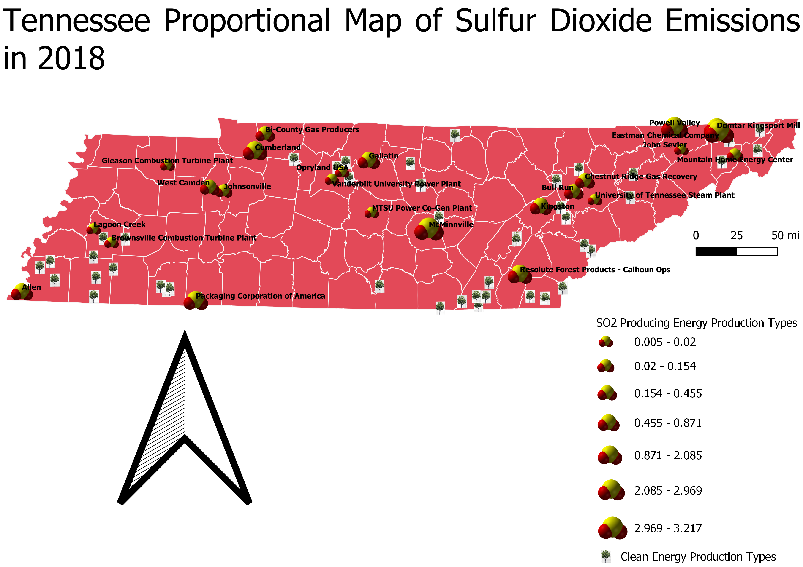

Homework 9: Tennessee Sulfur Dioxide Proportional Map
Leanna Mahle - 730323194
For this map I wanted to look at modern levels of sulfur dioxide production within the state of Tennessee. What I found was pretty interesting. The actual number of energy production plants that produce sulfur dioxide (plants that run off the combustion of biomass, oil, natural gas, coal, or other fossil fuels) were actually outnumbered by renewable energy plants (plants that use hydro, wind, solar, or other). The plants that produce SO2 are shown by the SO2 molecule and plants that don't are shown by the Tennessee state tree: the Tulip Poplar. There was a large number of energy plants that were solely based on hydro or solar power. However, sulfur dioxide production was still produced by other plants. This data shows the plant annual SO2 total output emission rate measured in pounds per megawatt-hour (lb/MWh) in 2018. This rate has decreased since the implementation of the Clean Air Act of 1963. Yet, we are not certain if these will change in the future due to the uncertainty of the political environment as of now. It was interesting to see just how much information the EPA collects about the environment.

Data used for this project
Cleaned CSV Dataset
Link to Shapefile
Link to Website for Shapefile Data
Link to Website for CSV Data